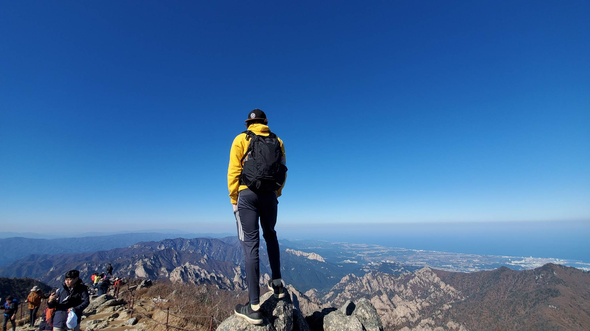

About Me

Hello! I'm a dedicated individual with a passion for education and technology.
I spent two enriching years as an educator, specializing in physics, where I had the privilege of sharing my knowledge and inspiring young minds.
My journey has taken me across borders, as I've had the unique experience of teaching English in both Japan and Korea,
fostering cross-cultural connections and expanding my horizons.
My latest adventure has led me into the exciting world of web development.
I've been immersed in the intricacies of code and have developed proficiency in several key programming languages, including Java, JavaScript, CSS, and HTML.
My goal is to leverage these skills to become a proficient web developer, combining my love for problem-solving and creativity to build engaging and
functional online experiences.
I'm excited about the endless possibilities in the ever-evolving tech landscape and am eager to continue
honing my coding skills to make a meaningful impact in the digital realm.